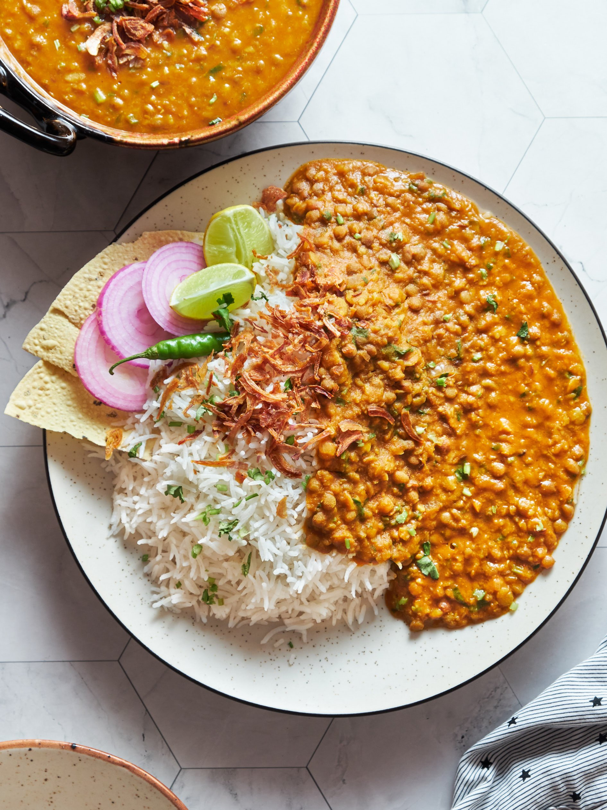
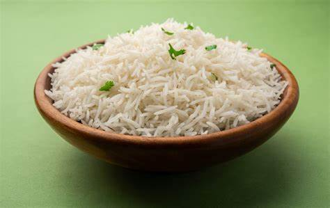
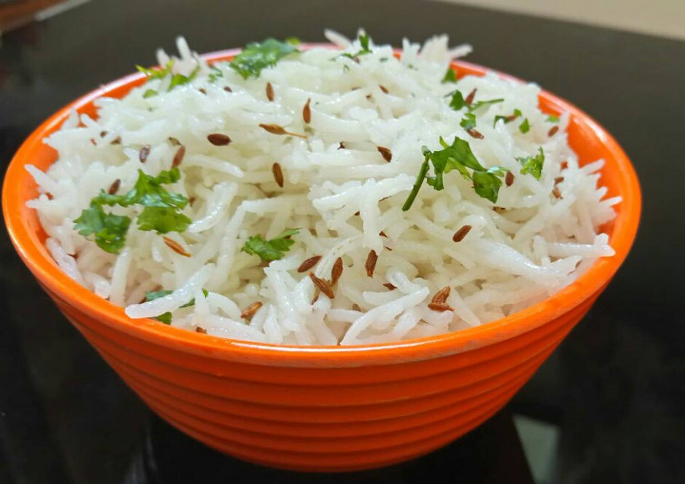

Filter By
Food Type
Price Range
Rating
Stock Availability
delivery Time
Midday Meals

Veg Thaali
₹149
Serves 1 | A wholesome and delicious meal with a variety of vegetarian dishes.
Perfectly balanced with flavors and nutrition for a fulfilling experience.
Add extra items: Paneer, Dal Tadka, Extra Roti (+₹30 each).
In Stock • 4.6 • 40-45 mins

Butter Chicken with Naan
₹119
Serves 1 | Creamy, flavorful butter chicken served with soft butter naan.
A perfect combination of rich gravy and fluffy naan.
Add extra items: Extra Naan, Salad, Butter (+₹30 each).
In Stock • 4.2 • 35-45 mins

Tadka Chawal
₹180
Serves 1-2 | Enjoy the rich and smoky flavors of our Tadka Chawal,
prepared with aromatic spices and tempered to perfection.
Add-ons: Curd, Papad, Extra Tadka (+₹30 each).
In Stock • 4.1 • 40-45 mins

Palak Paneer
₹250
Serves 1-2 | A classic dish with soft paneer cubes cooked in a rich,
creamy spinach gravy. A perfect balance of taste and nutrition.
Add-ons: Butter Roti, Jeera Rice, Extra Paneer (+₹30 each).
In Stock • 3.9 • 40-50 mins
Palak Paneer
₹250
Serves 1-2 | Soft paneer cubes cooked in a rich, creamy spinach gravy.
A healthy and delicious choice for lunch or dinner.
Add-ons: Butter Roti, Jeera Rice, Extra Paneer (+₹30 each).
In Stock • 3.9 • 40-50 mins

Steamed Rice
₹120
Serves 1-2 | Soft, fluffy, and perfectly cooked steamed rice.
Pairs well with curries, dals, and stir-fried vegetables.
Add-ons: Dal Tadka, Ghee, Papad (+₹30 each).
In Stock • 4.6 • 40-45 mins

Mutton Curry
₹400
Serves 1-2 | Tender mutton pieces slow-cooked in a rich and spicy gravy.
A must-try dish for non-veg lovers.
Add-ons: Steamed Rice, Butter Naan, Raita (+₹50 each).
In Stock • 4.4 • 30-35 mins

Pulao
₹180
Serves 1-2 | Aromatic basmati rice cooked with flavorful spices and fresh vegetables.
A light yet delicious meal perfect for lunch or dinner.
Add-ons: Raita, Salad, Papad (+₹30 each).
In Stock • 4.6 • 20-45 mins

Kadhi Chawal
₹220
Serves 1-2 | A comforting meal of tangy yogurt-based kadhi paired with steamed rice.
Perfect for a hearty, home-style experience.
Add-ons: Fryums, Extra Kadhi, Ghee (+₹30 each).
In Stock • 4.0 • 30-35 mins

Hyderabadi Biryani
₹350
Serves 1-2 | Experience the rich, authentic taste of Hyderabadi Biryani,
cooked with fragrant basmati rice, aromatic spices, and juicy, tender meat.
Add-ons: Raita, Mirchi Ka Salan, Extra Biryani Rice (+₹50 each).
In Stock • 4.8 • 40-45 mins

Rajma Chawal
₹280
Serves 1-2 | A comforting North Indian dish made with red kidney beans simmered in a rich tomato-based gravy, served with steamed rice.
Add-ons: Extra Rajma, Onion Salad, Ghee (+₹30 each).
In Stock • 4.0 • 20-35 mins

Dal Tadka
₹260
Serves 1-2 | Classic yellow lentils cooked to perfection and tempered with aromatic spices, served with steamed rice or roti.
Add-ons: Extra Dal, Ghee, Green Chilli (+₹30 each).
In Stock • 3.6 • 40-45 mins
